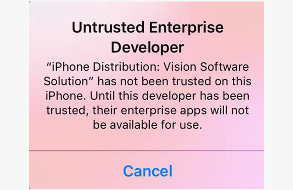
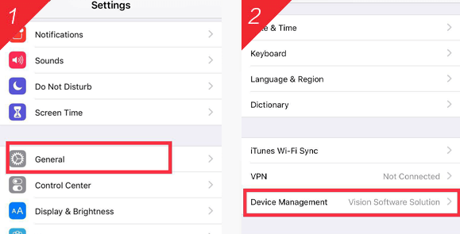
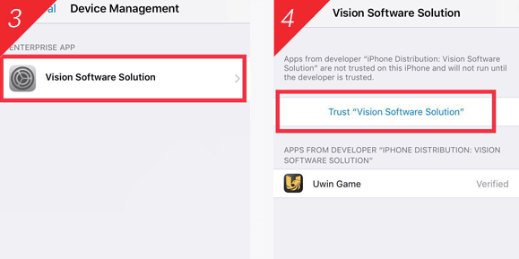

【Install Instructions】
Due to IOS system permission restriction, in order to open the application, user need to enter [Settings >> General >> Device Management], to agree to trust the appilication credibility.
Follow the Instructions below
01
Once you opened the downloaded application, IOS require user to verify the credibility of the application, as below:

02
User need to enter [ Settings >> General >> Device Management ], select the UWIN application as below;


03
Once clicked, Select 【Verify】, and now you can open the application & start gaming.